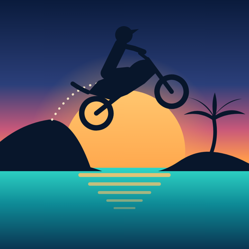

Whipshore
English · Česky
Privacy Policy / Zásady ochrany soukromí
Support
Whipshore is a relaxing trick-riding game: four shores, a garage for your bike and rider, bullet time and a radio that comments on every landing. No ads, no accounts, no tracking. It works offline.
Something broken, or a question? Write to rudolf@melounek.cz and mention your device, iOS version and what happened. Your scores, stars and gear are stored on your device only, so deleting the app deletes them.
Podpora
Whipshore je klidná hra o skocích a trikách na motorce: čtyři pobřeží, garáž pro motorku i jezdce, bullet time a vysílačka, která komentuje každý dopad. Bez reklam, bez účtu, bez sledování. Funguje offline.
Něco nefunguje, nebo se chceš na něco zeptat? Napiš na rudolf@melounek.cz a uveď zařízení, verzi iOS a co se stalo. Skóre, hvězdy i výbava jsou uložené jen v zařízení, odinstalováním hry se smažou.